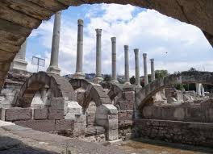
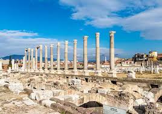

Roma döneminde yapılan bu alan İ.S. 178'de meydana gelen depremden sonra büyük onarım görür. Sözcük anlamı "Pazar Yeri" olan Agora, ticari bir alan olmakla birlikte politik toplantılar ya da halk mahkemelerinin de yapıldığı devlete ait bir alandır. Agora'nın Batı Kapısı kemeri üzerinde İmparator Marcus Aurelius'un karısı Faustina'nın kabartma portresini görebilirsiniz


 "İzmir"e dönmek için basın
"İzmir"e dönmek için basın